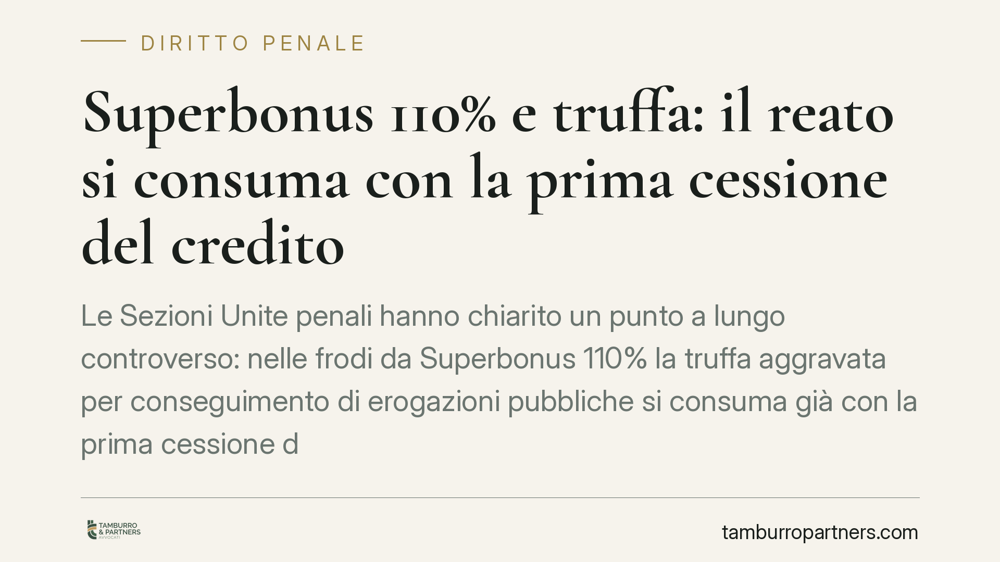

Superbonus 110% e truffa: il reato si consuma con la prima cessione del credito
Le Sezioni Unite penali hanno chiarito un punto a lungo controverso: nelle frodi da Superbonus 110% la truffa aggravata per conseguimento di erogazioni pubbliche si consuma già con la prima cessione del credito fittizio, senza attendere riscossione o compensazione. Una lettura che anticipa il momento consumativo e amplia la confisca per equivalente, con ricadute concrete per imprese, cessionari e professionisti coinvolti.

Il fatto
Il caso nasce da un procedimento della Procura di Palermo nei confronti del titolare di un'impresa individuale, indagato per aver generato crediti d'imposta legati a lavori da Superbonus mai eseguiti o gonfiati. Il nodo giuridico sottoposto alle Sezioni Unite era semplice nella domanda, decisivo nelle conseguenze: quando si consuma il reato di truffa aggravata quando il profitto non è denaro contante, ma un credito fiscale ceduto a terzi?
La risposta della Cassazione fissa un principio destinato a orientare centinaia di procedimenti pendenti: il reato è compiuto già nel momento in cui il credito fittizio viene ceduto per la prima volta. Non occorre che il credito venga effettivamente riscosso o utilizzato in compensazione con debiti tributari.
Inquadramento normativo
Il riferimento centrale è l'art. 640-bis c.p., che punisce la truffa aggravata per il conseguimento di erogazioni pubbliche. La disposizione richiama la struttura dell'art. 640 c.p. (artifici o raggiri, induzione in errore, danno e profitto ingiusto) e la aggrava quando il vantaggio illecito riguarda contributi, finanziamenti o erogazioni provenienti dallo Stato o da enti pubblici.
Le Sezioni Unite collocano il credito d'imposta da Superbonus dentro il perimetro delle erogazioni pubbliche. La conseguenza tecnica è che il profitto del reato si identifica con il credito stesso, e non con la somma eventualmente incassata a valle. Da qui l'anticipazione del momento consumativo: nel momento in cui il credito inesistente entra nel circuito della cessione, lo Stato subisce già un danno potenziale e l'autore ottiene un profitto giuridicamente apprezzabile.
Resta sullo sfondo il rapporto con l'art. 8 del D.lgs. 74/2000 (emissione di fatture per operazioni inesistenti), spesso contestato in concorso, e con l'art. 640-quater c.p., che estende alla truffa aggravata la disciplina della confisca, anche per equivalente, prevista dall'art. 322-ter c.p.
Perché questa pronuncia conta
L'effetto più rilevante riguarda la confisca per equivalente. Se il reato si consuma con la prima cessione, l'oggetto della confisca è l'intero valore del credito fittizio, a prescindere dall'esito economico successivo. Il sequestro preventivo può quindi colpire beni dell'indagato fino a concorrenza di quel valore, anche quando nessuna somma è stata materialmente incassata.
Anticipare la consumazione incide anche sulla prescrizione, che inizia a decorrere prima, e sul tentativo, che diventa configurabile nelle fasi precedenti la cessione. Cambia inoltre la posizione dei cessionari successivi: la buona fede nell'acquisto del credito va valutata con attenzione, perché il reato a monte è già perfezionato e la circolazione del credito può intrecciarsi con profili di ricettazione o riciclaggio.
Implicazioni pratiche
Per le imprese edili, i general contractor e i professionisti che hanno asseverato stati di avanzamento lavori, il quadro si fa più stringente. Non è più sostenibile la tesi difensiva secondo cui, in assenza di monetizzazione, il danno erariale non si sarebbe realizzato. La sola generazione e cessione del credito fittizio integra la condotta.
Per chi ha acquistato crediti in buona fede, cresce l'importanza di dimostrare la diligenza nei controlli a monte: documentazione dei lavori, congruità delle spese, tracciabilità dei pagamenti.
Cosa fare in concreto
- Verificate subito l'esposizione dei crediti ancora in portafoglio: individuate quali derivano da operazioni la cui documentazione tecnica e contabile è solida e quali presentano criticità.
- Conservate ogni evidenza dei controlli svolti al momento dell'acquisto del credito: istruttoria, asseverazioni, visti di conformità, corrispondenza. In sede penale la diligenza va provata, non affermata.
- In caso di sequestro preventivo, chiedete immediato supporto difensivo: i termini per l'istanza di riesame sono brevi e la quantificazione del profitto confiscabile è spesso contestabile.
- Valutate l'eventuale concorso di reati fiscali (art. 8 D.lgs. 74/2000): la strategia difensiva cambia a seconda delle contestazioni cumulate.
- Non dismettete né cedete beni potenzialmente aggredibili dalla confisca per equivalente senza una valutazione legale preventiva.
La pronuncia non chiude il tema: molto si giocherà sulla prova dell'inesistenza dei lavori e sulla posizione soggettiva dei singoli. Ma il perimetro è ormai tracciato, e conviene muoversi con cognizione.
*Contributo informativo a cura di Tamburro & Partners - Avv. Giuseppe Tamburro. Non costituisce parere legale.*
Ogni condominio ha una storia a sé.
Se gestisci un'amministrazione e vuoi un confronto su una specifica questione condominiale, scrivi allo studio. Ti rispondiamo entro un giorno lavorativo.